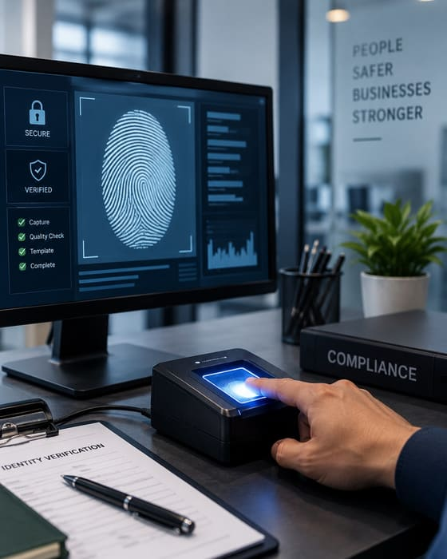

FBI background check Kansas City
Live Scan Fingerprinting Kansas City
Digital, ink-free fingerprint capture submitted directly to the FBI through our authorized channeling partner. Results returned within 1 minute up to 5 days. No smudged ink fingerprints, no mailing, no delays.
- No ink required
- FBI-authorized channel
- 1 min – 5 days
- Same-day available

Quick facts
- 1 min–5 daysTypical result turnaround
- 500+Business clients served
- 100%Successful verifications
- Results returned to you within 1 minute up to 5 days
- Submitted directly to the FBI via an authorized channel
- No ink, no smudges, no rejected submissions
- Same-day available
- Appointment recommended for faster service
- Bring a valid government-issued photo ID
About this service
What is Live Scan fingerprinting?
A digital fingerprinting technology that captures your fingerprints electronically using a specialized scanner, no ink, no mess.
The digital prints are encrypted and transmitted directly to the FBI through our authorized FBI-approved channeling agency, which processes your Identity History Summary request and returns results to you typically within 1 minute up to 5 days.
Unlike traditional FD-258 ink fingerprints, which must be physically mailed and processed manually, Live Scan delivers a faster, cleaner and more reliable result with a significantly lower chance of rejection due to poor print quality.
Not every agency accepts Live Scan. If your agency, licensing board or employer specifically requires a physical FD-258 ink fingerprint form, you need that service instead. Not sure? Call us before you come in and we will confirm in under two minutes.

What to bring
- Valid, unexpired government-issued photo ID, driver’s licence, state ID or U.S. passport
- The name or reference number of the agency requesting the check, if applicable
- Any forms, instructions or ORI numbers provided to you by the requesting agency
What you receive
- Electronic transmission of your fingerprints to the FBI through our authorized channeling agency
- FBI Identity History Summary delivered within 1 minute up to 5 days
- Submission receipt for your records
- Follow-up assistance if results are delayed or questioned
Who needs Live Scan
People & situations that require Live Scan
If you need an FBI-based digital fingerprint background check for any of the following, Live Scan is your service.
Step by step
How the Live Scan process works
The entire appointment typically takes 15–20 minutes from the moment you walk in.
Schedule or book your appointment
Booking online takes two minutes and helps reduce your wait time. Bring a valid, unexpired government-issued photo ID.
Identity verification & intake
We verify your identity against your government-issued ID and collect the required applicant information, full legal name, date of birth, place of birth and the reason for fingerprinting. This data is required by the FBI for processing.
Digital fingerprint capture
Your fingerprints are captured digitally using our certified Live Scan scanner, a flat-bed optical device that reads all ten fingers with no ink. The scanner immediately checks print quality and alerts us if a rescan is needed before we proceed.
Encrypted transmission to the FBI
Once quality is confirmed, your fingerprint data is encrypted and transmitted electronically to the FBI through our authorized FBI-approved channeling agency. The channeler processes your request and forwards results directly to you at the email or address you provide.
Results returned within 1 minute up to 5 days
You receive your FBI Identity History Summary typically within 1 minute up to 5 days. Results are delivered by the channeler and can be forwarded to the requesting agency, embassy or employer as required.
Appointment checklist
- Valid, unexpired government-issued photo ID
- Name of the requesting agency or program, if applicable
- ORI number or form reference if provided by the agency
- Email address, results are delivered electronically
- Allow 15–20 minutes for the appointment
Result delivery
- FBI Identity History Summary emailed within 1 minute up to 5 days
- Can be forwarded directly to an embassy, employer or agency
- Available in hard copy by mail if required by the requesting party
- We assist with follow-up if there are processing delays
Comparison
Live Scan vs FD-258 ink fingerprints
Both services capture your fingerprints. The method, format and use case differ, here is how to decide which one you need.
| Feature | Live Scan (digital) | FD-258 ink fingerprints |
|---|---|---|
| Method | Digital scanner, no ink | Traditional ink on a paper form |
| Submission | Electronically to the FBI or agency | Mailed physically to the agency |
| Result speed | Within 1 minute up to 5 days | Days to weeks, mail dependent |
| Risk of rejection | Very low, quality checked before sending | Higher, ink smears and poor ridge clarity |
| FBI Identity History Summary | Yes | Yes, by mail |
| ATF firearms applications | Not accepted | Required |
| State licensing boards | Some accept, confirm first | Most boards require ink fingerprints |
| Foreign embassy / visa | Accepted by most | Some require physical ink fingerprints |
| Best for | FBI personal checks, visa, immigration, federal use | ATF, state boards, out-of-state agencies |
Call us at (816) 442-0295 before your appointment. Tell us the name of the agency asking for fingerprints and we will confirm in under two minutes whether Live Scan or FD-258 ink fingerprints are required. You can also compare the methods in detail.
Why choose Midwest Identity Services
Why Kansas City trusts us for Live Scan
We have built our reputation on getting fingerprints right the first time, fast results, authorized channels and zero guesswork on your submission.
FBI-authorized channel
We submit through an FBI-approved channeling agency authorized to process Identity History Summary requests. Your submission goes through the proper, secure federal channel every time.
Results within 1 minute up to 5 days
Electronic submission means your results do not wait in a mail pile. Most applicants receive their FBI Identity History Summary significantly faster than with ink fingerprint submissions.
Quality checked on the spot
Our scanner validates print quality in real time before we transmit. If a finger needs to be rescanned, we do it immediately, no rejected submissions from poor print quality.
Encrypted & secure
All fingerprint data is encrypted before transmission and handled in strict compliance with FBI and federal security standards. Your biometric data never leaves our system unprotected.
Appointments available
Book Monday to Friday 9AM–6PM or Saturday 10AM–3PM. Most appointments are completed in 15–20 minutes.
We answer your questions
Not sure if Live Scan is what you need? Call us before you drive over. We will confirm your service, what to bring and what to expect, in under two minutes.
Live Scan FAQ
Frequently asked questions
Still have questions? Call (816) 442-0295 and we will sort it out in two minutes.
What is an FBI Identity History Summary?
An FBI Identity History Summary, sometimes called a “rap sheet”, is an official record of all federally reported criminal history associated with your fingerprints. It is issued by the FBI and is one of the most widely accepted background check documents for international, federal and immigration purposes. It covers arrests and dispositions reported to the FBI from law enforcement agencies across the United States.
Do I need an appointment or can I come in?
Appointments are available for Live Scan fingerprinting during our regular business hours: Monday through Friday 9 AM to 6 PM, and Saturday 10 AM to 3 PM. Booking online is recommended to minimize wait time. Most appointments take 15–20 minutes.
How long does it take to get results back?
Results are typically returned within 1 minute up to 5 days through our authorized FBI channeling agency. In most cases you will receive your FBI Identity History Summary by email. Actual processing time depends on FBI volume, but digital submissions are significantly faster than mailed ink fingerprints.
What ID do I need to bring?
A valid, unexpired government-issued photo ID is required, a driver’s licence, state-issued ID or U.S. passport. Your ID must not be expired. If you are a foreign national, a passport is strongly preferred over other forms of identification.
Does my visa, embassy or agency accept Live Scan results?
Most embassies, consulates and foreign agencies that require an FBI background check accept the electronic Identity History Summary that Live Scan produces. However, some countries or specific consulates may require a physical ink fingerprint submission instead. We strongly recommend confirming with the requesting agency before your appointment. If in doubt, call us at (816) 442-0295 and we can advise.
Can I use Live Scan for my ATF firearms application?
No. The ATF does not accept Live Scan submissions for NFA applications or FFL licensing. ATF requires physical FD-258 ink fingerprints. If you need ATF fingerprinting, see our dedicated ATF & FFL fingerprinting page.
What if I have poor fingerprint quality, ridges worn down or scarring?
Worn ridges from manual labour, aging or skin conditions can affect print quality. Our scanner checks quality in real time and we will attempt multiple scans before submitting. If prints are truly unreadable, the FBI may still process the submission with a notation. We will inform you during the appointment if there are any quality concerns before we transmit. See also why fingerprints get rejected.
What does Live Scan fingerprinting cost?
Pricing depends on the specific submission type and channeling fee. Live Scan print to card is $60 for the first card and $25 for each additional printed card, and an FBI Identity History Summary background check is $90. Please call (816) 442-0295 or check our booking page for current pricing. We will confirm the total cost before you begin your appointment, no surprises.
Book your Live Scan fingerprinting today
Appointments available Mon–Fri 9AM–6PM and Saturday 10AM–3PM. Results returned within 1 minute up to 5 days.
8101 E. Bannister Rd, Kansas City, MO 64134